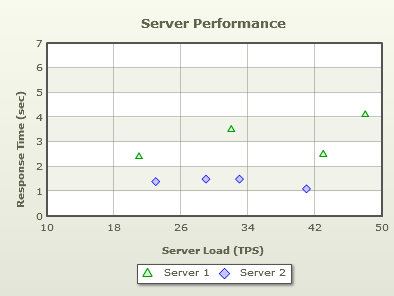
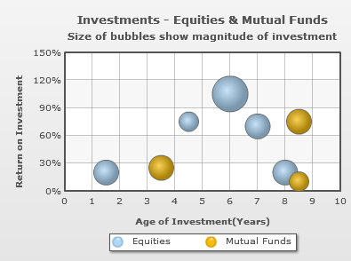

| Creating your First Scatter & Bubble Chart | ||||||||||||||||||||||||||||||||||||||||||
|
In previous examples, we have learned how to create Single series, Multi series, Stacked and Combination charts using the Sales Comparison data. Now, we will create two different kinds of charts namely, Scatter and Bubble charts. | ||||||||||||||||||||||||||||||||||||||||||
| Creating a Scatter Chart | ||||||||||||||||||||||||||||||||||||||||||
The XY or Scatter chart is used when there are two interdependent parameters to be shown on a chart. For example, to understand the variation of rainfall with temperature, the XY chart is an ideal choice. We have used data comparing the performance level of two servers. For our example, we will compare the performance level of two servers. We will compare the Response Time (in secs) vs. the Server Load (TPS). The final chart will look as under: Follow the steps below to create a Scatter chart:
Open the file server-performance.html in a Web browser and you will see an animated Scatter chart similar to the one below: See it live! |
||||||||||||||||||||||||||||||||||||||||||
| Creating a Bubble Chart | ||||||||||||||||||||||||||||||||||||||||||
|
The bubble chart is used when there are three inter-dependent numeric parameters to be shown on a chart. For example, you can use the bubble chart to manage your investments better with age of the investments, its return on investment and the amount invested as the three parameters you plot. We will create a simple bubble chart that looks as under: Follow the steps below to create a Bubble chart:
<chart caption='Investments - Equities & Mutual Funds' subCaption='Size of bubbles show magnitude of investment' yAxisName='Return on Investment'
xAxisName='Age of Investment(Years)' yNumberSuffix='%' yAxisMaxValue='150' xAxisLabelDisplay='auto' numVDivLines='9' >
<dataset seriesName='Equities' >
<set y='20' x='1.5' z='15000' />
<set y='75' x='4.5' z='10000' />
<set y='105' x='6' z='30000' />
<set y='70' x='7' z='16000' />
<set y='20' x='8' z='15000' />
</dataset>
<dataset seriesName='Mutual Funds' >
<set y='25' x='3.5' z='15000'/>
<set y='10' x='8.5' z='10000'/>
<set y='75' x='8.5' z='16000'/>
</dataset>
</chart>
Note that you can also provide chart data in JSON format. View an example of JSON data here. Or, to learn more about FusionCharts XT JSON data format, please go through FusionCharts XT data formats > JSON section. Open the file investment-analysis.html in a Web browser and you will see an animated Bubble chart similar to the one below: See it live! Code examples discussed in this section are present in Download Package > Code > MyFirstChart folder. What happens if Flash player is not available?
|
||||||||||||||||||||||||||||||||||||||||||
| Troubleshooting | ||||||||||||||||||||||||||||||||||||||||||
If for any reason, you do not see a chart, run through the following checks: If you see an endless loading progress bar in your browser, or if the right click menu (right click at the place where the chart is supposed to be) shows "Movie not loaded", check the following:
If you get an "Error in Loading Data" message, check the following:
If you get an "Invalid XML Data" message, it means that the XML data document is malformed. Check it again for common errors like:
To check whether your final XML is correct, open it in your browser and you will see the error. If only the text "FusionCharts XT will load here!" is displayed, check with the following:
|
||||||||||||||||||||||||||||||||||||||||||